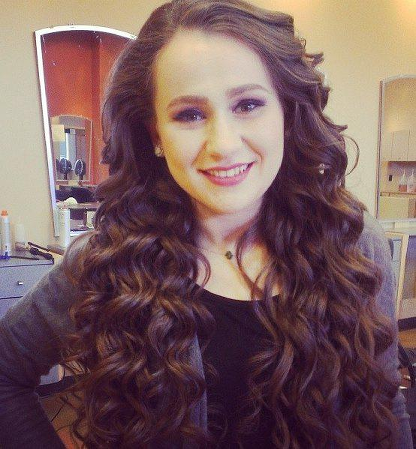

Your Hair Is Amazing!!! Naomi Alt is a licensed Cosmetologist from Buffalo, NY now living in Washington Heights, NYC. She completed her Bachelor's in Early Childhood Education at SUNY Buffalo State College, and is now pursuing her Master’s in Literacy at Hunter College. Naomi loves working with people and building a special connection with each and every one of her clients. Naomi looks forward to meeting and working with the people in her new community! 